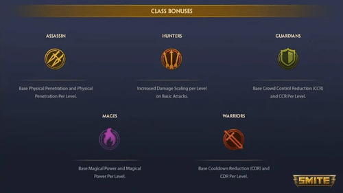
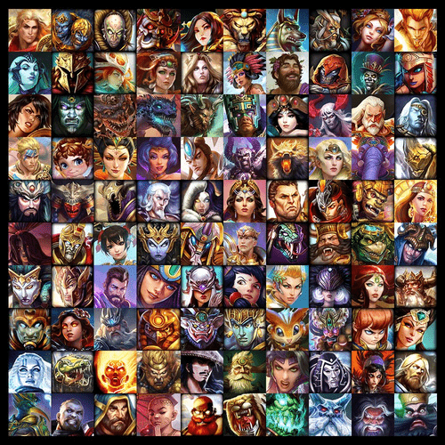
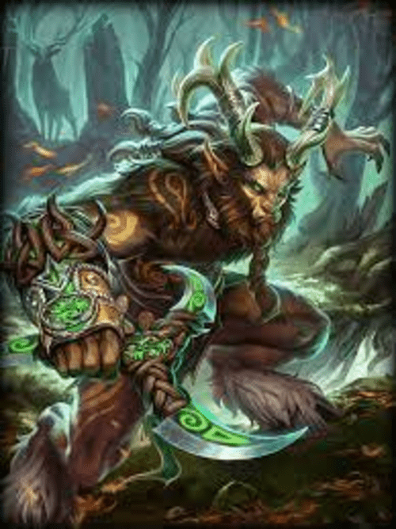

Smite is a video game that fits the categoery MOBA (Multiplayer online battle arena), usually these types of games requiere strategy. Smite requires stategy in the sense that you need to assemble the right team to be succesful. Each God fits into one of follwing five classes category: Assasins, Mages, Hunters, Warriors, or Guardians.
There are over 130 different gods and goddess to use in the battleground with, and various of different game modes with different layouts of the map. In most cases the game ends when either your Titan or the opposing teams Titan is defeated. Each character has four unique abilites that they use to damage opposing players with the ultimate goal of killing them to earn xp and gold that further lets you level up your god and buy items to upgrade your player stats.
Smite has some recognizable gods that are commonnly known such the greek gods like Hades, Hercules, or Aphrodite.
My personal favorite God that I have played hundreds of matches using him would be The Horned God Cernunnos
With his unique ability to switch to different seasonal stances ( He is in his Spring stance in the image above ), his glave also changes according to the season (Summer, Winter, Fall, Spring) giving different perks in each season. Mastering how to properly use his different seasons in different situations is what most players cannot do. But with nearly 20% of my 2000+ matches played with Cernnnunos I think I have perfected each season and this comes to my benefit in PvP combat.